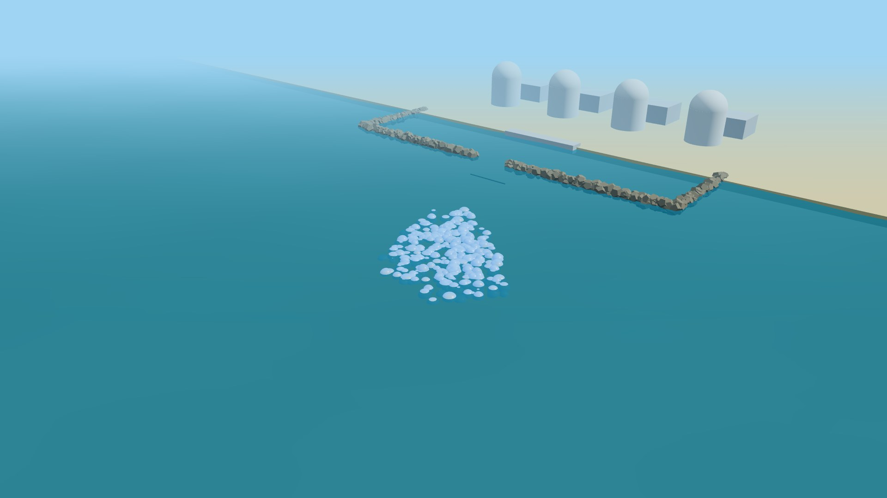
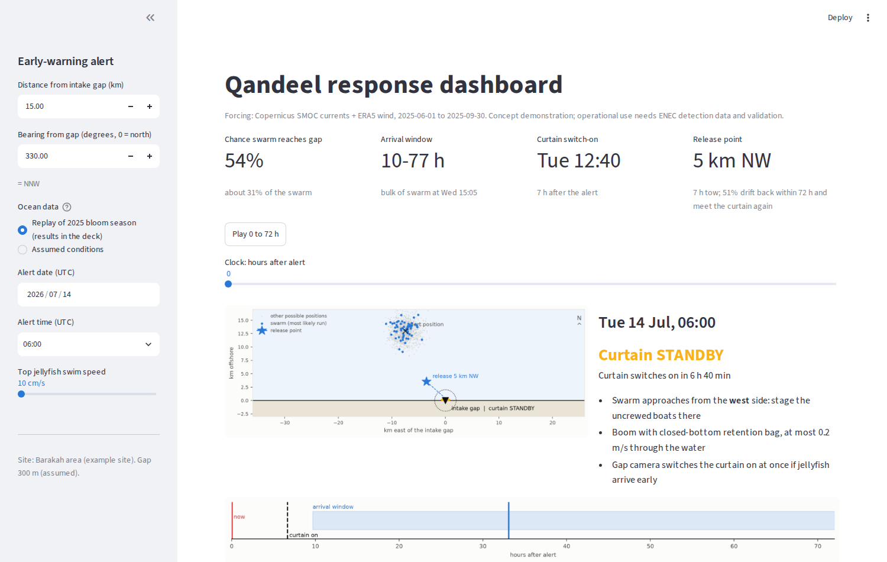
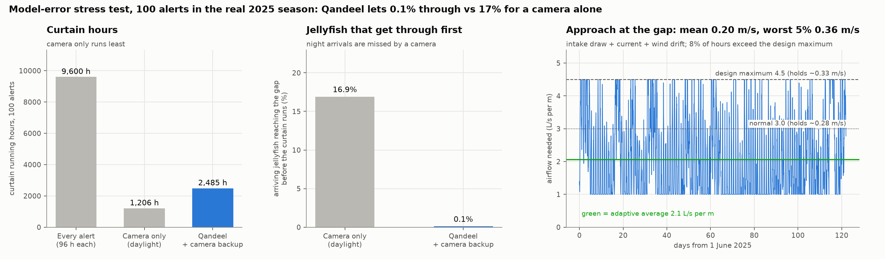
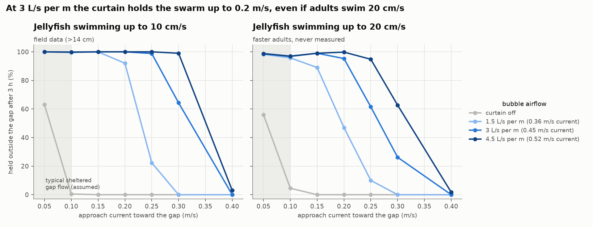
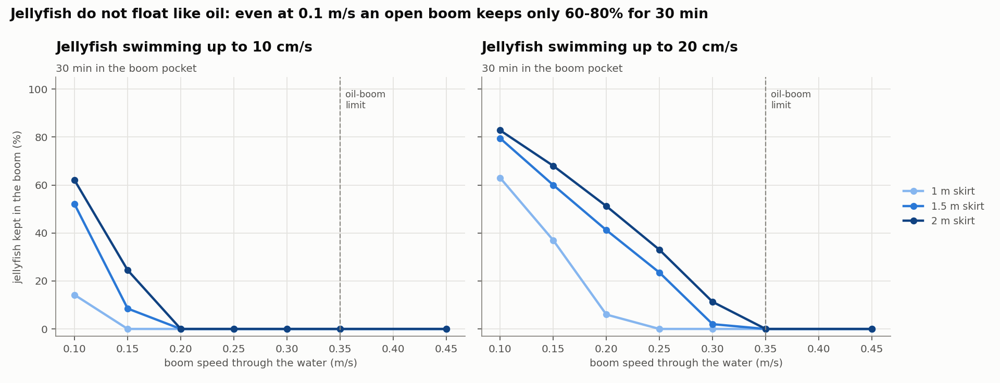
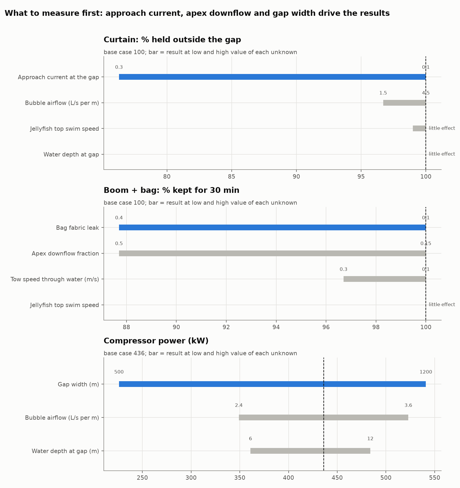
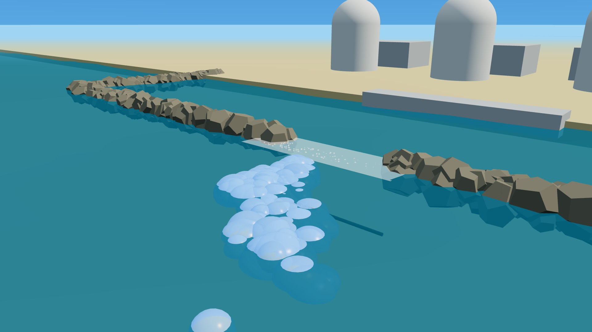
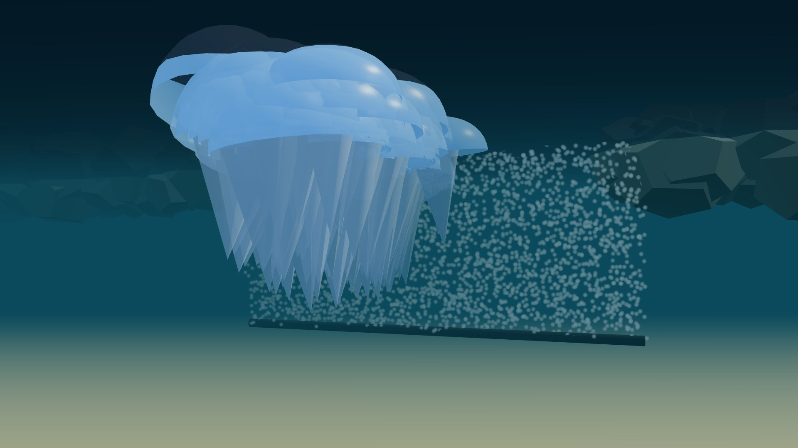

Herd, don’t harvest: autonomous, live-release management of Blue Blubber jellyfish swarms after ENEC’s early warning
Blue Blubber swarms (30–45 cm, 1–3 kg) drift onto seawater intakes. Clearing them takes heavy manual work and almost none survive.
After ENEC’s alert, a drift planner decides when to act; a bubble curtain at the breakwater gap holds the swarm out; two uncrewed boats tow a boom with a closed-bottom bag and release the jellyfish alive. An AI gap camera is the backup.
Simulation on real 2025 Gulf currents and wind, stress-tested against physics the planner does not know; online dashboard; 19 tests; open code.
A 1:20 tank test (AED 300 kit) to measure what the model assumes, then a sea pilot with ENEC.
ENEC already detects swarms offshore. The open question is what to do next: manage high volumes with less manual work and less harm.

The breakwater leaves one opening to the intake. A swarm offshore must pass through it, so that is the one place we act. Image: our 3D model (stylised; not to scale).
ENEC reports a swarm, e.g. 15 km NNW. The planner receives it automatically.
400 simulated drifts of 60 swimming jellyfish each, on the live current and wind forecast: 54% chance of arrival, window 10–77 h.
Curtain on at +7 h; uncrewed boats staged on the approach side; release point chosen.
Curtain across the gap holds the swarm outside; airflow follows the current.
Two uncrewed surface vessels, supervised from shore, close a U-boom with a closed-bottom bag.
Tow ~5 km at ≤0.2 m/s (about 7 h) and open the bag; about half drift back and are held again by the curtain.
An AI camera counts jellyfish at the gap and starts the curtain if they arrive early. Its records are the training data for a learning model that corrects the drift forecast.


Truth drifts with currents ×0.7–1.3, wind drift 1.5–5% and an unmodelled 0–3 cm/s current. A daylight camera alone misses night arrivals; Qandeel switches on ahead of them.
2,485 curtain hours vs 1,206 for camera-only (about 13 h, USD 170 of energy, per alert), and 74% fewer than running on every alert. In return: 1–2 days of warning.
Still simulation against simulation, not real jellyfish. Next: compare drift with real Gulf drifter tracks and ENEC swarm records.


Water approaches the gap at ~0.20 m/s on average (intake draw + current + wind), 0.36 m/s in the worst 5% of hours. Normal setting 3 L/s per m holds ~0.27 m/s; design maximum 4.5 holds ~0.33 m/s. ~8% of hours exceed it and are flagged to operators.
Oil floats back up; neutrally buoyant jellyfish are dragged under the skirt far below the 0.35 m/s oil-boom limit (0–55% kept at 0.2 m/s). A closed-bottom fabric bag keeps 84–100% in the model.
| Risk | How we reduce it |
|---|---|
| Bubbles drawn into the intake | Curtain on the seaward side; bubbles surface in under a minute, in the outer basin; bubble detector on the intake line; curtain moved further out if the pilot shows carry-over |
| Nuclear approval, security | FANR approval from day one; kit stays outside safety-related intake structures; boats operated by plant staff inside the security zone rules |
| Jellyfish harmed | No cutting, pumping or mesh; coarse bubbles push them away at the surface (air under the bell checked in the tank test) |
| Turtles, dolphins, seabed | Escape gap, slow tow, camera stop on sighting; pipe on legs above the bed, away from coral and seagrass |
| Released jellyfish strand | Left alone, 57% of the same swarm strands within 4 days; release ~5 km out strands 40% |
| Carbon | ~11 MWh per event: ~4.4 t CO₂ on a gas grid, ~0.1 t on the plant’s own power |
| Item | Estimate (300 m gap) |
|---|---|
| Compressed air | 0.9 m³/s, ~135 kW, oil-free (ISO 8573-1 Class 0) |
| Capital (indicative) | USD 0.55–1.8 M: curtain, compressor + standby, boom, bags, two uncrewed boats, sensors |
| Running cost | ~USD 1,100 of energy per event |
| Value | One to four avoided 12 h unit outages (~USD 0.5 M each, EPRI figure) pay it back |
| Capacity | Gathering 4–43 t/h, but the loaded tow sets the pace: ~0.5 t/h net per boom unit, ~1.8 t/h with three uncrewed tugs swapping bags. The curtain does the bulk work; boats clear what builds up |
| Gulf hardening | Membrane diffusers, foul-release coating, modular sections, lifted out off-season |
| Assumption | Basis | If wrong |
|---|---|---|
| Intake behind a breakwater with one gap, ~300 m (not yet measured), ~9.5 m deep | Brief; public channel depth | Curtain and compressor scale with width |
| Alert gives position, hours of notice | Brief: “time to prepare” | Camera trigger switches the curtain on |
| Swarm in top 1 m; adults swim ≤10–20 cm/s | Field and lab studies (Australia) | Deeper skirt; tested at 20 cm/s |
| Swarm density 0.1–1 per m³ | No published figure | Capacity scales linearly |
| Apex downflow 25–50% of tow speed; bag passes 20% | Model hypothesis | Measured in the tank test |
Limitations: the planner is tested only against simulations; currents come from one model point and the coast is a straight line; the curtain model ignores depth; ~8% of hours exceed the design airflow. Why not harvest? Blue Blubber is fished for food elsewhere; a full bag can go to a licensed processor instead of release. Release is the default while no UAE market exists.

Real-data planner, curtain, boom, release and logistics models; online dashboard; stress test; 19 tests.
AED 300 kit: aquarium air line, pump, neutrally buoyant agar mock jellyfish. Measure curtain hold, apex downflow, bag retention.
One curtain section and one uncrewed boom trial in bloom season; FANR approval; drift checked against tracked swarms; survival and effects on other species.
Full gap; live ENEC alerts into the planner; learning model trained on camera and swarm records corrects the forecast.
Live dashboard: enechackathon.streamlit.app. Code, data and tests: github.com/Shaaha-7/ENEC. AI assistants helped search and summarise literature, check claims, draft text and write simulation code, and an open text-to-speech model voices the video; the team reviewed every decision, assumption and figure, and can explain each in our own words.


Stills from our 3D explainer video: the curtain holding a swarm outside the gap, and the bubble wall seen underwater.